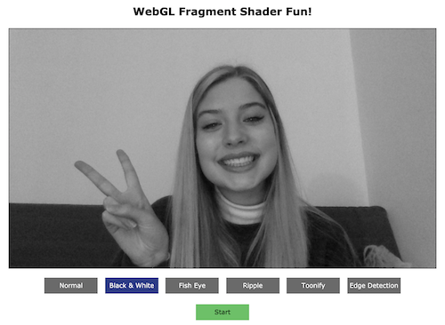
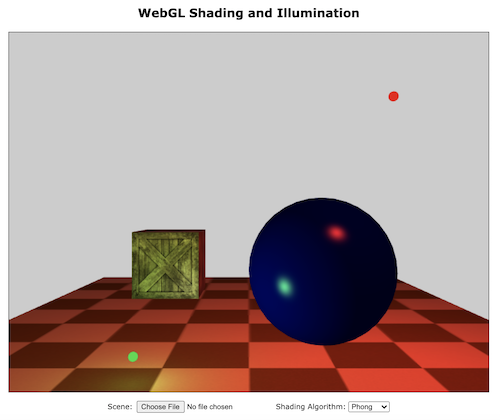

Computer Graphics Photobooth Project
View the project live here
In my computer graphics course, I was assigned a project where I needed to implement different filters that would manipulate live video similar to a photo booth application. There were four filters that needed to be created: black and white, fisheye, ripple, toonify, and edge detection. Using the OpenGL API, I edited a fragment shader for each of the filters to manipulate the final color determined for the pixels in the live video.

Thomson Reuters Internship Project
During my summer internship with Thomson Reuters, I worked on the UI for an investigation software called CLEAR that provides customers with solutions to detect, prevent, and investigate fraud. One of the tasks I was given was to add a passport checker search page to the application. This included writing Java code and using Google Web Toolkit to add an anchor that directs users to the passport checker search page, and then load the correct fields to be filled out by the customer to complete the search.

Computer Graphics Illumination and Shading Project
View the project live here
The assignment was to implement the standard computer graphics illumination model using both Gouraud and Phong shading. Additional features included enabling multiple point light sources, properly illuminating objects with different light colors, and using texture mapping within the scene.
I worked on this project with a partner, and we went through each step together to form our solution. To implement the illumination model, we edited four different fragment and vertex shader files for both color and texture objects using the gouraud and phong algorithms. We used the Gouraud and phong algorithms to correctly calculate the final color a specified pixel must be shaded. In order to do this, we used equations to calculate the ambient, diffuse, and specular light, and then combined these three components to obtain the final color.
One of the most difficult aspects of the project was implementing texture mapping. We initially struggled to correctly set up the texture binding using the OpenGL API. Eventually, we were able to successfully shade different textures applied to our objects.
